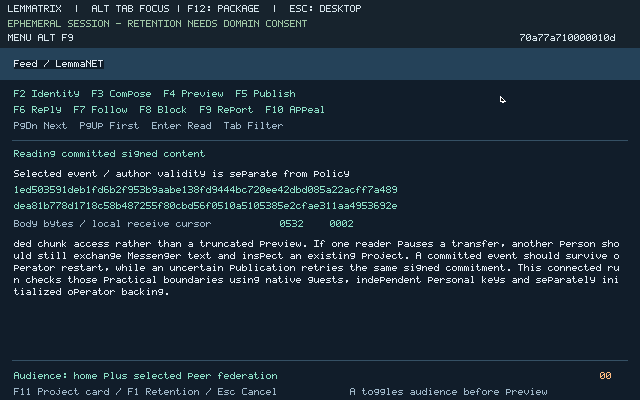

The implementation adds an installable native Feed, independent author/account owner, native scoped signing, durable federation event/content storage, explicit replication, project handoffs, moderation/appeals and approved personal retention. Relays, terminal services and Mailbox now admit bounded independent clients and replenish listeners without per-client operator stop/listen handoffs. Existing Messenger and Forge use that shared native infrastructure.
The connected infrastructure segments passed on clean image 2e5147c4…, with one explicit personal recovery. Three clients shared the running relays, with two at Alpha. Eight meaningful native UI-authored events crossed Alpha/Beta unchanged, including a useful 1330-byte post, follow and causal reply. During a stalled Feed request, Messenger text/reply took 52.28/34.35 seconds; a fresh routed Forge request verified the genuine release in 6.23 seconds with the stalled authenticated context intact. Exact lost-acceptance-response retry preserved one identical event and its positive reservations, and a fresh unretained account had no old identity while replicas retained publications. The focused infrastructure record binds those completed segments. Six-route saturation/reuse and a new Messenger exchange after more than 750 empty probes also passed. The strict project continuation passed: replicated author edit/tombstone and a genuine 1683-byte signed-release card, real Library Fork with lineage/trusted selection, approved preference export, and fresh Fork/Inspect refusals after Registry revocation sequence 2. Moderation, operator restart and offline migration remain in progress.
One unexplained personal transport fatal interrupted reconnect. Alice’s explicit native Network replacement and Alice/Bob’s parent-linked Delivery 0.8.2 upgrades preserved their session owners/UI; all shared operators and eight other Network instances were unchanged. New text/reply passed in 37.26/33.76 seconds with Charlie’s exact authenticated request paused for 72.02 seconds. Continuous admission across that personal recovery is not claimed. The first leg retains its account 0.9.1/UI 0.9.2 identities; the separately compiled account 0.9.2/UI 0.9.3 local-block fix awaits Bob’s explicit retained upgrade.
This branch builds on unmerged draft PR #4, head 4d4bde6415ae1925d030dfb2c4644275f23d3606. Draft PR #5 targets that branch. Neither PR is merged by this campaign. The 28 October governing specification and release charter remain intact.

./lt build --clean
cp build/live/guest.bin build/campaign009-final-v11.bin
./lt feed package --publisher-private tests/keys/development-rsa.pem --account-version 0.9.2 --account-parent f50eaa12d7dc69c962584ce34a12d53d9b064970c640d23d594e930d7fc4bc07 --federation-parent 5bb8adb18e7161203a9eec7d6ffebf7ac1e7a0c510f8d74b652642f91c7b9686 --ui-version 0.9.3 --ui-parent bfd1a9584b654f8ee4f0c3f1b3703608b452da7a9ad472683821aa8f4f13a635 --output build/campaign009-final-v11-feed
./lt messenger package --publisher-private tests/keys/development-rsa.pem --delivery-version 0.8.2 --delivery-parent 5e166b16eeeed082bb86a246f9a79bec88fb13f097304622c9d33cd51992320a --output build/campaign009-final-v7-messenger
PYTHONPATH=tools python3 - <<'PYREGISTRY'
import live_build
print(live_build.app('Guest.Registry', 'Guest.Registry.main', 'campaign009-registry-final-v11', 2))
PYREGISTRY
The following fresh-start path uses the shipping packages directly. First native admission accepts their signed manifests; an already installed older component still requires its exact parent and a newer release. This path avoids reproducing the known Delivery0.8.1 idle defect. The recorded connected-v7 journey instead began with its separately identified older packages and later admitted their exact successors; those initial package identities remain in the machine record.
Use the native Feed guide for standalone personal/federation commands, relay enrollment, explicit mode 3 replication, moderation and sealed recovery. Commands continue to work after an acceptance controller exits. The checked-in RSA development publisher is the disclosed existing package/project bootstrap; it signs no Feed author event, moderation event or replication identity.
PYTHONPATH=tools python3 tests/native_community_campaign.py \
--image build/campaign009-final-v11.bin \
--feed-packages build/campaign009-final-v11-feed \
--messenger-ready build/campaign009-final-v7-messenger/ready.json \
--registry build/live/apps/campaign009-registry-final-v11.bin \
--public-graph tests/fixtures/campaign008-existing-forge-closure.json \
--publisher tests/fixtures/campaign008-existing-forge-publisher.pub \
--output build/campaign009-fresh --mixed --replication-auto-renew --history-events 8
# Preserve these native actors for the connected continuations:
PYTHONPATH=tools python3 tests/native_community_active_forge.py --attach build/campaign009-fresh
PYTHONPATH=tools python3 tests/native_community_reconnect.py --attach build/campaign009-fresh --feed-packages build/campaign009-final-v11-feed
PYTHONPATH=tools python3 tests/native_community_commit_retry.py --attach build/campaign009-fresh
PYTHONPATH=tools python3 tests/native_community_capacity.py --attach build/campaign009-fresh --refusal-timeout 1500
# Uses natural idle evidence; records an honest skip if fewer than513 probes completed.
PYTHONPATH=tools python3 tests/native_delivery_idle_continuation.py --attach build/campaign009-fresh
PYTHONPATH=tools python3 tests/native_feed_project_account.py --attach build/campaign009-fresh --stage project
PYTHONPATH=tools python3 tests/native_community_policy_restart.py --attach build/campaign009-fresh --feed-packages build/campaign009-final-v11-feed --stage moderation
PYTHONPATH=tools python3 tests/native_community_policy_restart.py --attach build/campaign009-fresh --feed-packages build/campaign009-final-v11-feed --stage restart --resume
# Last: select the original federation offline for the approved hosting move.
PYTHONPATH=tools python3 tests/native_feed_project_account.py --attach build/campaign009-fresh --stage migrate --person bob --alpha-offline-approved --relaunch-retained-feed --feed-packages build/campaign009-final-v11-feed
The latest clean build and fresh packages reproduce the exact same system image 2e5147c4198cf7ec39ab053f2ea8895cfdceb1c9b9dcf79e1b7bb7627314bcdf. All nine freshly rebuilt packages match their separately identified shipping artifacts, including the two parent-linked Feed successors and Delivery 0.8.2. Registry remains byte-identical. The earlier Feed successor build retains its own initial Delivery identity. Their compiled local-block controls passed on QEMU and emulated AArch64. On this exact system image, installed AArch64 storage and Network restart passed under emulation in 19.94 seconds. Changed bulk failure/deadline, stale-request and context fixtures identify their modeled/oracle limits. The preserved690 installed AArch64 transport check uses disclosed legacy fixture credentials and makes no Feed-authority claim. Full installed Feed/Messenger AArch64 operation remains unqualified.
The fresh-shipping controller compatibility checks validate release/endpoint guards, the no-vault ledger, exact filtered-row shape and same-release relaunch without actor access. They do not claim a second complete fresh nine-guest execution. The recorded journey's later migration deliberately uses --upgrade-feed-packages build/campaign009-final-v10-feed to qualify the actual account/UI successor transition; a fresh shipping run uses the same-release relaunch command above.
The machine record identifies exact package paths, hashes, release IDs and the ready-manifest mapping. The checked-in project archive and publisher are byte-identical preserved evidence of the existing signed release, not authored Feed history. Reproduction output directories must be fresh. Controller resumption checks the same image, packages and full live incarnations; a real restarted operator requires fresh native recovery/authorization. Host controllers supply input, public configuration, opaque devices and deliberate availability faults. They do not author signed social state, choose hidden moderation outcomes or perform replication.
Earlier executions retain their original image, package, controller and result identities. They establish specific development behavior and explain measured repairs; they do not qualify the new clean image. Their complete references remain in the machine record and component record.
| Identified execution | Observed result and limit |
|---|---|
| 690e common journey | Three concurrent Feed clients; original signed short/long posts, follow/reply and 17 meaningful events across two stores. Messenger text/reply took 46.54/31.61 seconds while another client stalled; a separately submitted fresh routed Forge request took 6.21 seconds with the stalled authenticated terminal intact. Required-mode1 failure had no direct fallback. Exact response-loss retry, one-copy admission, unchanged positive retry reservations and no-vault local ephemerality passed. Later capacity and bulk reconnect failed; all nine guests were retired without changing their backing. |
| 690e capacity failure | The first extra route exposed an abandoned background Messenger read before six-route saturation. Delivery had discarded its request handle after 5000 work ticks without cancelling the longer terminal request. Delivery 0.8.1 now drains or cancels its exact request and retains a bounded cleanup margin. |
| 690e partial project continuation | Bob explicitly retained his account and durably published an edit at Alpha. Later replication stalled; no Fork or account lifecycle completion is claimed. Actual adapter/native fixtures then demonstrated asynchronous CONNECT failure retaining pending intent. The new image distinguishes that failure from harmless replacement cleanup and adds a banked creation deadline. |
| f597 application checkpoint | Replicated edits/tombstones, an original signed-release card, real Objects/Library Fork with lineage and trusted selection, approved preference export, and fresh Fork/Inspect refusal after a newer native Registry revocation. This checkpoint does not qualify Messenger contention or the complete connected lifecycle. |
| 8542 journey / 582f journey | Earlier three-client Feed/Messenger/Forge and retry checks are separately identified. Their later route/retry failures and the older manual replication renewals remain disclosed. Native listener acceptance, exact service/request pinning and durable finite rolling consent were repaired afterward. |
Focused installed/component checks cover cross-client Mailbox staging, conflicting event reuse and quota refusal, wrong moderator role, typed signing approval substitution, namespace/reclamation isolation, imported Registry revocation, account recovery and finite native replication rollover. Their records distinguish actual native state/wire execution from modeled authority or legacy fixture credentials. Primitive vectors were reused where unchanged.
The deliberate extension provides 15 process slots/eight ordinary slots, six service roles and 96 exact operation grants. Ordinary code remains 256 KiB with 2 MiB arenas and 16 KiB stacks. Network is 395,140 bytes within its 416 KiB built-in profile; Feed UI 181,516, account 145,572 and federation 167,516 bytes each fit ordinary packages. The machine contract records disjoint mappings and the Vault/Network 416 KiB built-in profiles.
Sixteen transport channels partition into 12 routed and 4 bulk channels. A relay needs an incoming/outgoing pair: six is the pair bound, now reached by three personal clients and three independent native probes. The installed capacity check refused the seventh client with native reason 51 after 1025.10 seconds, preserved all six routes, then admitted that same client in 229.76 seconds after one owned release. This substantial saturation latency is a material limit. New Messenger text/reply still passed in 32.88/32.09 seconds after 800/761 completed empty polls, without restart or renewed authority. Sixteen terminal banks carry independent keys/counters/fragments/owned tokens; one finite IPC dispatch lane is fairly shared. Mailbox has four 8 KiB stages and one durable writer. Feed has four 16 KiB stages, seven 128 KiB content segments, a 37,888-byte index,64-event/896 KiB total allowance and 16-event/256 KiB per-author allowance. Its 128 KiB segment buffer is writer workspace; ordinary reads use ServerStore's separate 4 KiB verified page. The eight meaningful initial events contain 5120 padded bytes and exceed both the UI's one-selected-row working set and that read page; the earliest and latest bodies were read again from both stores. This does not qualify exhaustion of the 64-entry committed index, segment workspace, total store or automatic compaction.
Replication commits at most 1 MiB of transport allocation before issuing a Network grant, from a finite selected total of at most 16 MiB. Unused allocation is burned after restart. Each outgoing event reserves its whole worst-case byte/work allowance; each of at most nine attempts is durably recorded before transmission, with at most 128 polls per attempt. A duplicate cannot renew its event reservation. Personal mode 1 and explicit inter-operator mode 3 have separate authority and scheduling; there is no direct privacy fallback.
The final source independently bounds a partial terminal frame and admitted IPC token to 10000 work ticks, and handshake/whole queued request to 100000. Healthy idle authenticated contexts remain reusable. Expiry cancels the exact owned token, wipes only the matching working/saved bank and retires its channel epoch and dependent pair. A compiled native state fixture exercises cancellation, stale epochs, selected-bank wiping and unrelated-pair preservation on RV64 and emulated AArch64; it is separate from installed wire admission. Bulk creation also has one100000-tick window in its independently banked152-byte relationship state; acknowledged listeners may remain idle. Changed failure/deadline cases passed as focused native fixtures. The same-image six-route saturation/refusal/reuse check passed; its measured latency remains qualified above.
Source proofs concern predicates actually used for stage ownership, signed scope, budget reservations, local-block visibility, recovered generations and dead-owner reclamation. They do not prove the compiler, devices, cryptographic implementation, complete imperative state machine or shipped binary. The machine record names those predicates without inflating a theorem count.
| Requirement | Concrete progress and limit |
|---|---|
| NET-001/003/004/005 | Typed signed events, scoped identities, broker-only mode 1 clients, separately authorized mode 3 replication, deduplication and independent moderation. Local three-hop evidence does not establish Internet-scale anonymity or interoperability. |
| FEED-001/002 | Native short/long posts, replies, local follows/filter/block, reports/appeals and original signed-release cards with current existing project checks. The full media/activity/action roadmap is not complete; unsupported economic and execution actions remain unavailable. |
| FEED-003/004 | Typed retained publishing state, approved public portable objects and federation-specific signed policy; no mandatory global index/share deployment. Private remote-home appeals, encrypted private portable export and certified cross-identity continuity remain unsupported. |
| DAT/SDK, VAULT-001/002/003/004, SRV-001/002/003/004 | Existing project signature/lineage/admission paths, typed native SDKs, distinct Objects 3/Feed and Messenger 2 authority, durable operator content/policy/budgets and finite voluntary services. Hardware loss, whole-store freshness, broad server roles and complete recovery/key-rotation obligations remain open. |
| RG-07/RG-11 | Development executions cover signed discussion/replication, Messenger project references and block/appeal; the current same-image project continuation completed a real Library Fork and rejected new actions after known revocation. No full gate completion is asserted; small private Messenger groups and the complete discover/build/sign/admit/seed/install flywheel remain obligations. |
All evidence is one-host local integration. Native x86-64 is an RV64 interpreter; AArch64 is emulated. Independent administration, physical hardware/power loss, side channels, external freshness and independent security review remain unqualified. Classical cryptography is not post-quantum; these tests do not establish Tor interoperability, global correlation resistance or hostile-government resilience. Services remain voluntary and zero-price. Future economic design still must make self-retrieval/colluding self-seeding net-negative at coalition level; this increment invents no balance or fee formula.